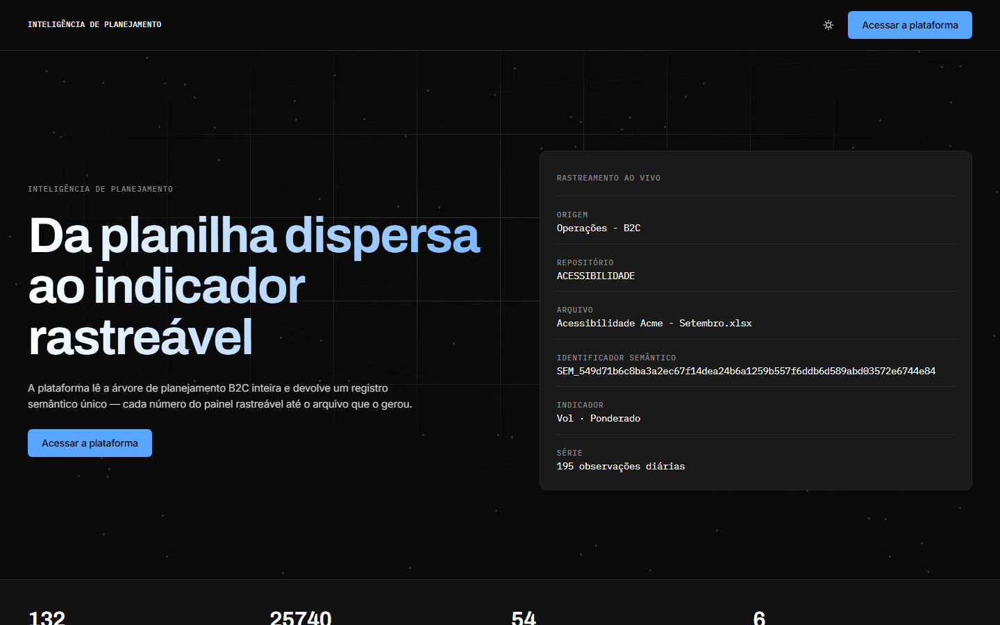

Planning Intelligence
Pipeline versionado e independente de provedor para transformar uma árvore de planejamento em dados semânticos rastreáveis. O repositório público usa organização e dados fictícios.
GitHubSou Nilson Lopes. Transformo processos e dados operacionais em fluxos mais claros, rotinas automatizadas e informação que as equipes conseguem usar.

Do dado de origem à decisão: foco em rastreabilidade, clareza operacional e menos trabalho repetitivo.
Pipeline versionado e independente de provedor para transformar uma árvore de planejamento em dados semânticos rastreáveis. O repositório público usa organização e dados fictícios.
GitHubIDE para orquestrar agentes e CLI em um espaço visual de trabalho.
Skill de design e motion para web, fundamentada em medições de sites em produção.
Minha experiência combina RPA, análise de dados, BI, planejamento operacional e automação. Começo entendendo quem usa a informação; depois organizo os dados, automatizo o que é repetitivo e deixo a lógica rastreável.